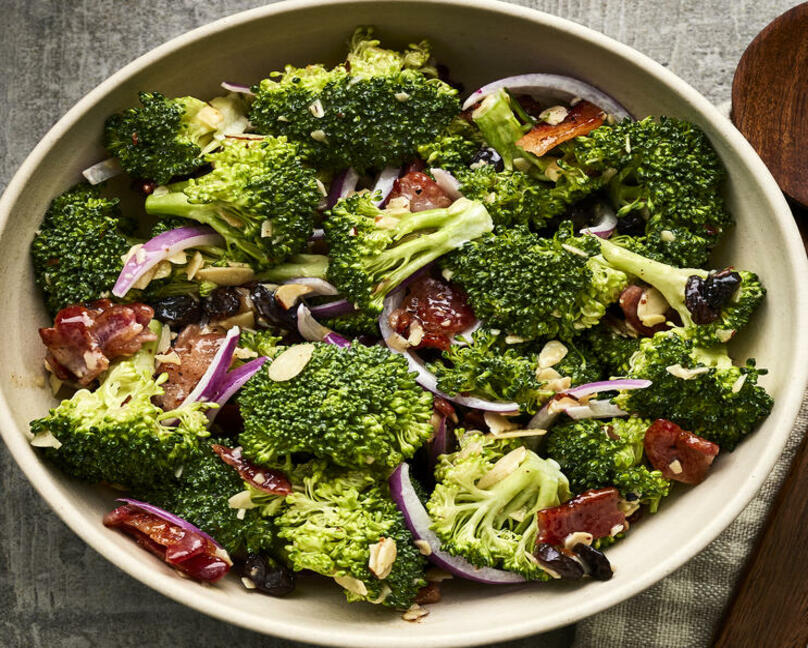

Broccoli Salad

This is a yummy summer broccoli salad that uses an interesting combination of fruits, vegetables, and meats. Before you decide you won't like it, try it. You'll be pleasantly surprised.
- 1/2 pound bacon
- 2 heads fresh broccoli
- 1 small red onion
- 3/4 cup raisins
- 3/4 cup sliced almonds
- 1 cup mayonnaise
- 1/2 cup white sugar
- 2 tablespoons white wine vinegar
- Place bacon in a deep skillet and cook over medium-high heat until evenly brown, 7 to 10 minutes. Cool and crumble.
- Cut the broccoli into bite-sized pieces and cut the onion into thin bite-sized slices. Combine with the bacon, raisins, and almonds and mix well.
- To prepare the dressing, mix the mayonnaise, sugar, and vinegar together until smooth. Stir into the salad.
- Let chill before serving, if desired.